Часть 3 из 3
База.Клуб - профессиональная среда, в которой риэлтор собирает своё отличие от рынка
Чтобы собственник видел разницу между вами и агентом за 50 тысяч ещё до разговора о комиссии
Каждую неделю новая рабочая тема: живые разборы, практика сильных агентов, тренировки, готовые инструменты и документы
1 990 ₽ в месяц. Отмена в любой момент через бот
Три варианта. Предлагаю выбрать осознанно
Если вы дочитали до этой страницы, значит, тема вас касается.
Дальше есть три варианта, и я предлагаю выбрать осознанно.
Первый. Оставить как есть. Работать дальше, периодически снижать комиссию, когда собственник давит, и списывать это на рынок. Так работает большая часть агентов, и на жизнь этим зарабатывают.
Второй. Собирать своё отличие самостоятельно. Читать, смотреть, пробовать, ошибаться, доходить до всего своим опытом. Путь рабочий. Я сам так и шёл. Только он занимает годы, и часть уроков стоит денег: несостоявшихся сделок, потерянных клиентов, комиссии, которую отдали, потому что не нашли аргумента.
Третий. Собирать то же самое, но регулярно подсматривая, как это уже сделали другие. Не вместо своей работы, а параллельно ей.
Клуб про третий вариант.
Что такое База.Клуб
Это подписка на профессиональную среду. Не курс, который надо пройти от первого урока до последнего.
Каждую неделю внутри идёт новая рабочая тема. Отстройка от конкурентов, работа с покупателем, переговоры, привлечение клиентов, личный бренд, работа с более высоким чеком, сложные сделки. Темы меняются вместе с реальными задачами рынка.
Вы не обязаны потреблять всё. Появилась задача - взяли нужное.
Что происходит каждый месяц
4 живых встречи:
- эфир со мной по теме недели;
- практическая тренировка, где отрабатываются конкретные навыки;
- приглашённый эксперт;
- мастермайнд с разбором рабочих ситуаций.
4 подкаста по теме месяца.
Новые гайды, чек-листы, шаблоны и документы.
Разборы кейсов и ответы на вопросы по вашим ситуациям из практики.
Челленджи - когда нужно не посмотреть, а сделать.
Приглашённых экспертов я подбираю сам, под тему. Это практикующие агенты и руководители: люди, которые собрали своё отличие и могут объяснить, как именно.
Больше 120 материалов, которые уже лежат внутри
Кроме еженедельной программы, у резидентов есть доступ к базе материалов.
Больше 120 материалов:
- 53 записи живых эфиров;
- 40 подкастов;
- 22 гайда и чек-листа;
- 7 комплектов документов.
6 курсов, 63 урока. Отдельно от базы материалов.
Среди них - курс по Telegram для экспертов и брендов на 36 уроков. Курс по продвижению объектов на Авито. Хоумстейджинг квартир для инвесторов. Обмен: от теории к практике. Аванс, задаток, обеспечительный платёж - что выбрать риэлтору. Одобрение сложных клиентов: как распознать риски до подачи заявки.
Отдельно скажу про гайды, потому что они прямо про то, о чём были обе статьи. Внутри уже лежат разборы по защите комиссии, по снижению собственника в цене, по пакетным предложениям, по самопрезентации, по доверию, по сложным переговорам, по возражениям продавца и покупателя.
То есть инструменты из второй части - это не то, что вам предстоит придумывать с нуля. Часть уже разобрана и оформлена.
При этом я бы не измерял ценность клуба количеством часов. Большая библиотека полезна только тогда, когда вы умеете достать из неё нужную вещь в нужный момент.
Новое в клубе: ИИ-тренажёр звонков
Недавно добавили инструмент, которого раньше в клубе не было.
Это тренажёр для отработки звонков с искусственным интеллектом. Выбираете сценарий - холодный звонок собственнику или встречу с ним. Выбираете уровень собеседника: лёгкий клиент, средний или сложный. И звоните по-настоящему - голосом, а ИИ отвечает вам голосом живого собственника, с его характером и возражениями.
Какой характер попадётся - заранее неизвестно. Как и в реальном звонке.
После разговора тренажёр не просто ставит оценку. Он разбирает звонок по этапам: как вы открыли разговор, выявили потребности, отработали возражения, закрыли на следующий шаг. По каждому пункту - баллы и что именно сделать иначе.
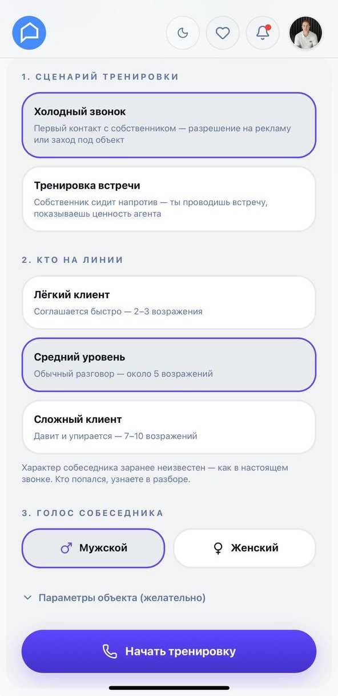
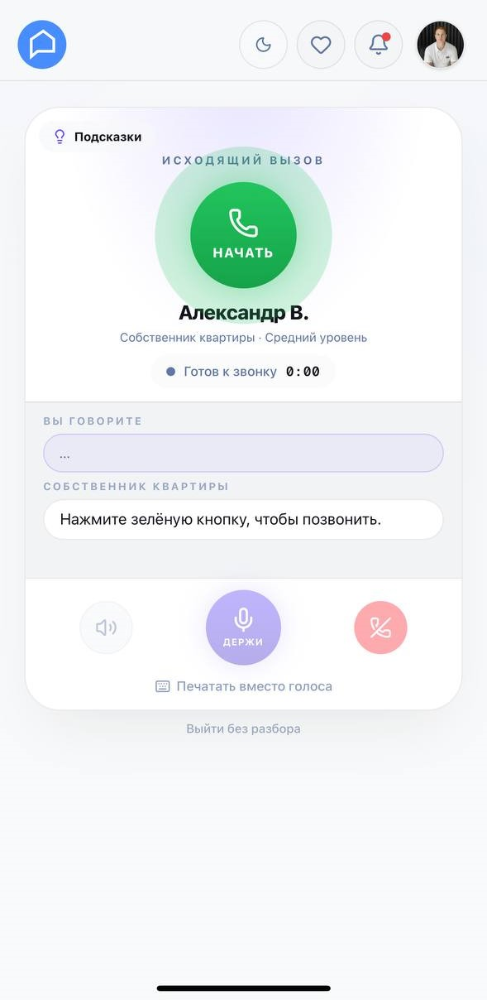
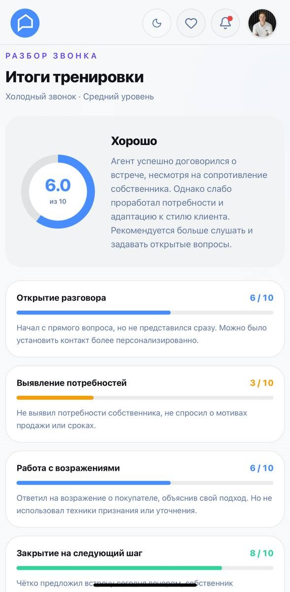
Выбор сценария → звонок → разбор по этапам с конкретной обратной связью
Тренироваться можно сколько угодно раз - до реальных звонков собственникам или вместо разбора тех, что уже не задались.
Вот что пишут агенты, которые уже попробовали:
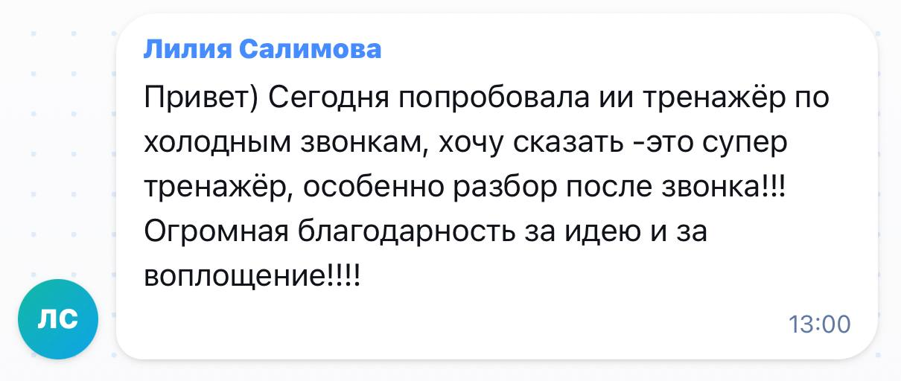
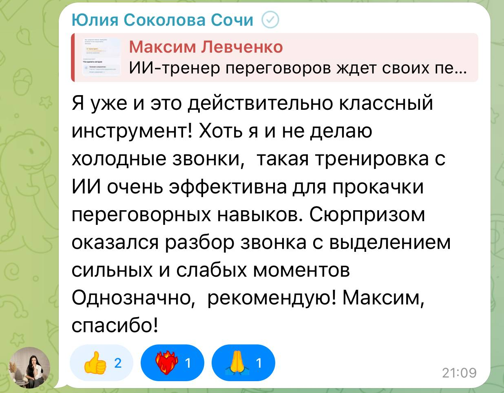
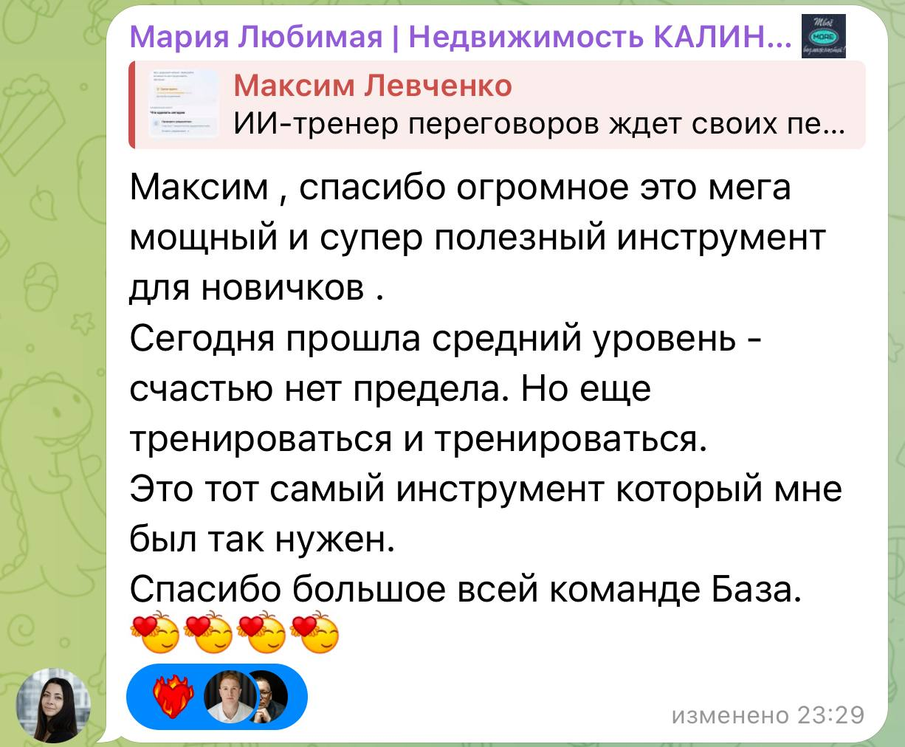
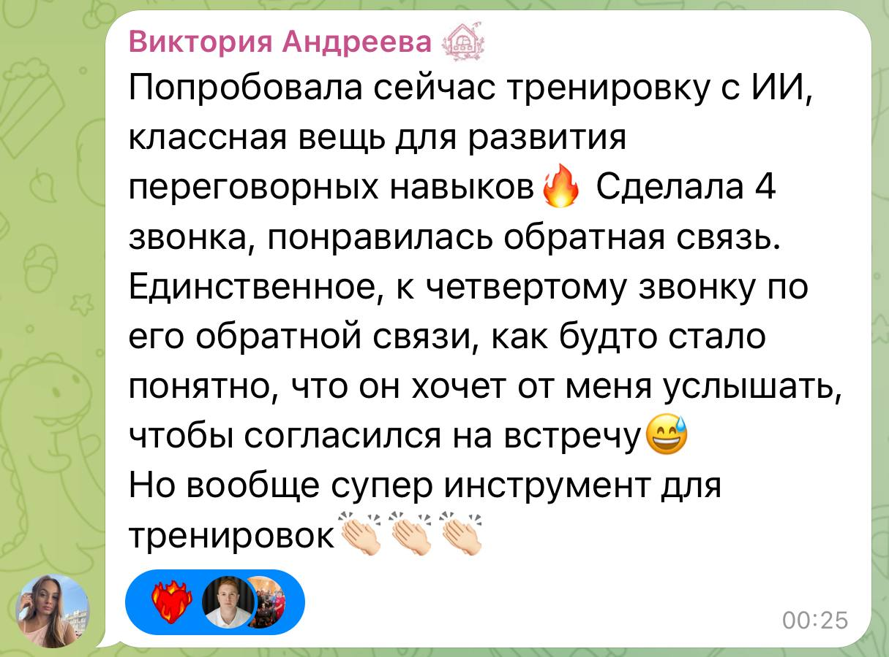
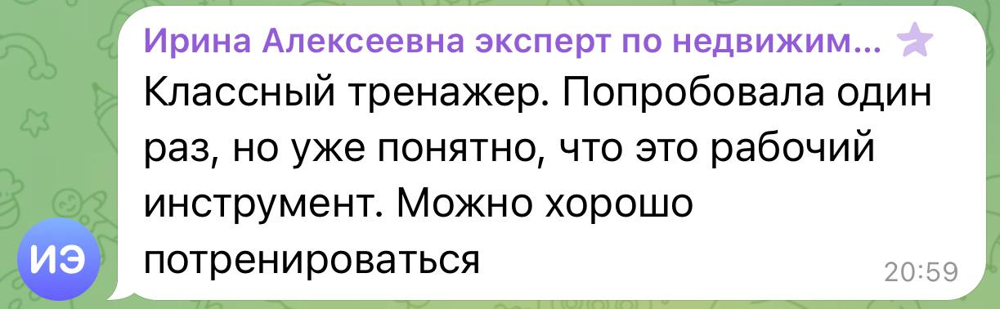
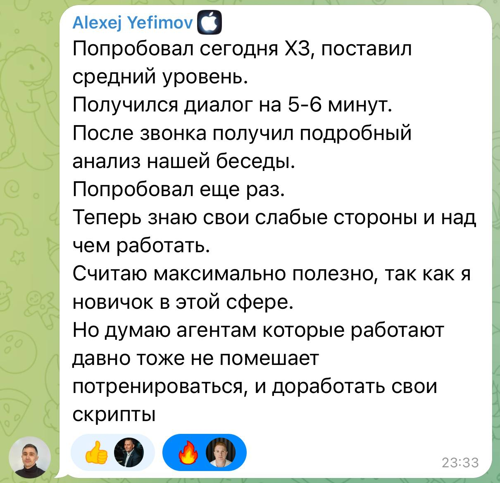
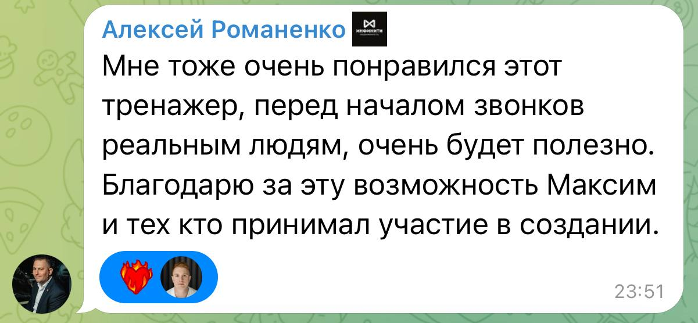
Когда нужна конкретная помощь по сделке
Клубом пользуются не только для развития вообще. Иногда нужен вполне конкретный ответ сегодня.
- Появилась сложная ситуация по сделке.
- Нужен документ, а составлять с нуля некогда.
- Возник юридический вопрос.
- Непонятен налоговый момент.
- Хочется посмотреть, как коллеги решали похожий кейс.
Внутри есть комплекты документов, разборы сложных сделок, а также юрист и налоговый специалист.
Резиденты из других городов и зачем они вам
Агентство остаётся агентством, руководитель руководителем.
Клуб добавляет второй круг. Резиденты работают в разных городах, компаниях и сегментах. Кто-то силён в работе с собственниками, кто-то с покупателями, кто-то давно работает с инвесторами, кто-то развивает личный бренд, кто-то умеет заходить в более высокий чек.
Здесь бессмысленно искать единственно правильный способ. Полезно видеть варианты: один агент делает так, второй говорит «у меня этот подход не работает, я делаю иначе», третий показывает третий вариант. А вы решаете, что подходит вашему рынку.
Плюс чисто практическая вещь: партнёры в других регионах и передача клиентов между городами.
Из отзывов резидентов:
«С некоторыми спикерами я никогда не познакомилась бы больше нигде».
«Равнение на лучших».
«Постоянное обучение, быть в курсе от лучших, желание развиваться и не отставать, мотивация становиться профессионалом».
Реальные межрегиональные сделки резидентов клуба
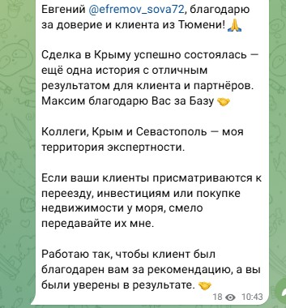
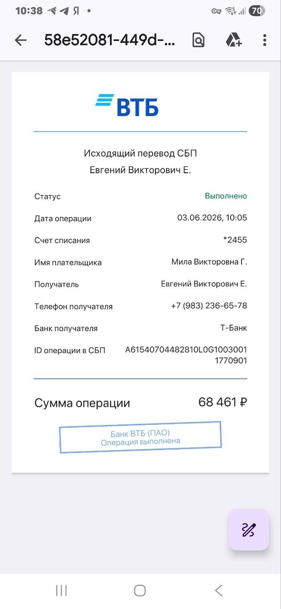
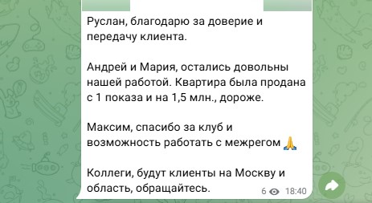
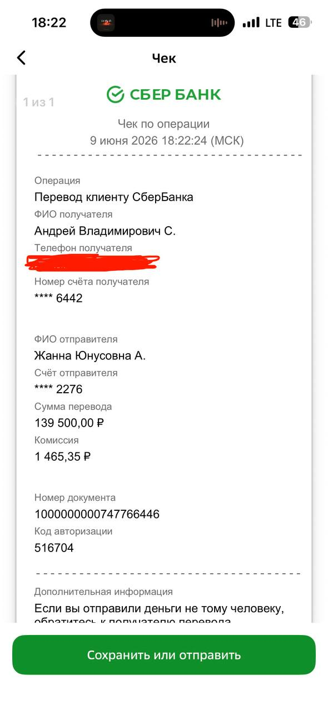
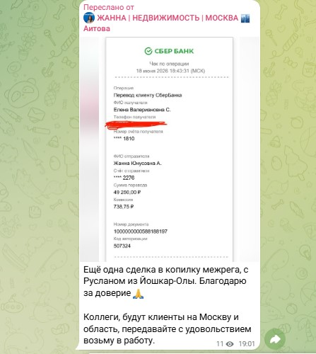
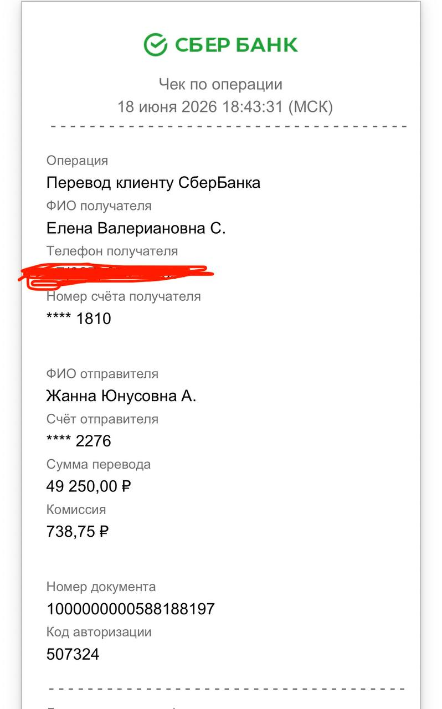
Возражения, которые я слышу чаще всего
«У меня уже есть хорошее агентство»
Отлично, и менять его не нужно. Хорошее агентство даёт огромное количество практики, особенно в первые годы.
Но вспомните мысль из второй части. Отстроиться от рынка, глядя только на свой офис, невозможно, потому что там все учились по тем же скриптам, что и вы. Клуб - второй профессиональный контур, а не замена первому.
«Я найду всё это бесплатно»
Многое - да. В Telegram и на YouTube информации огромное количество, и я не буду рассказывать, что какие-то знания есть только у нас.
Вопрос в том, сколько времени уйдёт, чтобы найти нужного человека, отфильтровать нормальный материал, понять, применим ли он вообще, связать несколько источников и наконец попробовать в работе.
Один из самых точных запросов, которые я слышу от агентов: «сжатый материал по делу». Вот это ближе к нашей логике.
«Мне не нужен ещё один курс»
Возможно, и не нужен. Клуб не надо проходить. Здесь нет задачи однажды поставить галочку «закончил».
Курс заканчивается. Профессиональная среда остаётся рядом, пока она вам полезна.
«У меня нет времени всё это смотреть»
И не надо. Это, пожалуй, самое важное.
Материалов внутри много, но ставить себе задачу «надо посмотреть всё» бессмысленно и вредно. У вас работа, клиенты, показы, сделки. Никакой пользы не будет, если развитие превратится в ещё один список невыполненных дел.
Используйте клуб как рабочий стол. Нужны переговоры - берёте переговоры. Решили заняться кейсбуком - смотрите разбор по кейсам. Сложная сделка - ищете нужный кейс или задаёте вопрос. Остальное подождёт.
Одна из резиденток описала это точнее, чем я:
«Информации ровно столько, чтобы не перегружать... ощущение, что я каждый день делаю тренажёр по развитию себя в профессии».
«А если тема месяца мне не актуальна?»
Такое будет. Темы идут по расписанию, а ваши задачи по расписанию не приходят.
Поэтому библиотека и работает отдельно от темы недели. Живые эфиры - это ритм и новое, база материалов - это ответ под текущую задачу. Одно не заменяет другое.
Что говорят резиденты
«Именно обучение с Клуба реализовала в сделки».
Мне здесь нравится слово «реализовала». Не посмотрела, не сохранила, не сказала «было полезно». Взяла и использовала.
«Самое ценное для меня - это знания. Иногда это совсем новая тема, иногда иной взгляд на знакомые вещи».
«Энергия единомышленников, постоянная динамика развития, новые навыки, самоконтроль над базовыми знаниями, вектор развития. Моя личная точка роста!»
«Клуб даёт толчок к действиям, информация воспринимается легко».
«В клубе я нахожу максимум полезных инструментов для практики и получаю правильный эмоциональный настрой, необходимый для работы».
Скриншоты отзывов резидентов
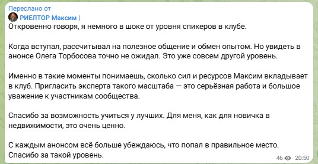
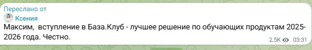
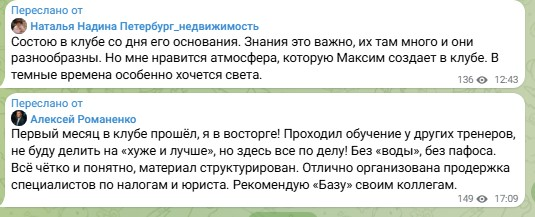
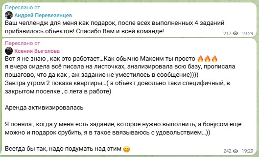
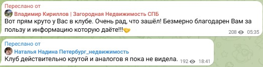
Кому подойдёт
Вы работаете риэлтором не первый год. Первые сделки провели, базовые вещи понимаете.
И вам знакомо: собственник давит по комиссии, а аргументов не хватает. Клиент говорит «я подумаю» и уходит. Вы понимаете, что звучите примерно как все остальные, но непонятно, что конкретно с этим делать.
Если хочется собрать своё отличие и перестать конкурировать ценой - формат вам подойдёт.
Кому не подойдёт
Если вы вчера пришли в недвижимость и вам нужна последовательная программа «профессия с нуля» - подписка не лучшее первое решение.
Если нужен один конечный курс с точкой «прошёл и закончил» - это другой формат.
И если вы ищете обещание конкретного дохода или количества сделок, такого обещания здесь нет. Я об этом говорил во второй части: отстройка не заменяет работу. Клуб даёт среду, практику, инструменты и людей. Что из этого попадёт в вашу работу, зависит от вас.
Сколько стоит
Для сравнения. Один курс внутри клуба - по Telegram для экспертов, 36 уроков - продавался отдельно за 50 000 ₽. Он входит в подписку вместе с остальными пятью.
Дальше простая арифметика. 1 990 ₽ - это меньше, чем разница в комиссии, которую вы отдаёте, когда не находите аргумента и снижаетесь. На эфире агенты называли свой разрыв с самым дешёвым риэлтором города: от 50 до 100 тысяч рублей. Одна несостоявшаяся уступка окупает подписку на несколько лет вперёд.
Я не обещаю, что вы перестанете снижаться. Обещаю, что здесь есть, где взять аргументы и посмотреть, как это делают другие.
Условия
Подписка продлевается ежемесячно автоматически. Покупать год не нужно.
Отключить можно самостоятельно через бот в любой момент, без звонков, писем и разговоров с менеджером.
Это сделано намеренно. Я не хочу держать людей договором. Если клуб перестанет быть вам полезен, вы уйдёте, и это нормально. Мне интереснее, чтобы вы оставались, пока он работает.
Почему имеет смысл заходить сейчас
Честно: искусственного дедлайна здесь нет, цена не поднимается через сутки, места не заканчиваются.
Причина простая. Живые эфиры, тренировка и мастермайнд идут по расписанию каждую неделю и не повторяются. Записи потом остаются в базе, но участие в живом разборе, где можно задать свой вопрос по своей ситуации, доступно только тем, кто внутри в этот момент.
Зайдя сейчас, вы попадаете на встречи этого месяца, а не только в архив прошлых.
Как выглядит один месяц изнутри - на примере сентября
Чтобы не быть голословным, показываю реальное расписание. Так выглядит наполнение клуба за 1 990 ₽ в месяц.
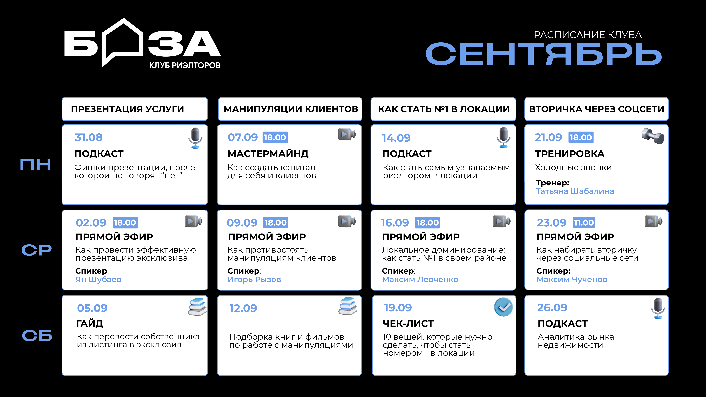
Первую неделю посвятим презентации риэлторской услуги. 2 сентября резидент клуба Ян Шубаев проведёт эфир «Как провести эффективную презентацию эксклюзива». Можно отлично провести встречу, задать правильные вопросы и понравиться собственнику, но если в конце вы не смогли нормально презентовать свою работу - эксклюзива не будет. Поэтому тема супер важная.
Вторая неделя будет особенно сильной. 7 сентября проведём второй мастермайнд «Как создать капитал для себя и клиентов», а 9 сентября к нам в клуб придёт топ-спикер Игорь Рызов с эфиром «Как противостоять манипуляциям клиентов». Будем разбирать, как не вестись на давление клиента, сохранять свою позицию и при этом не превращать переговоры в войну.
На третьей неделе поговорим о том, как стать риэлтором №1 в своей локации. 16 сентября я лично проведу эфир про локальное доминирование. Не обязательно пытаться стать самым известным агентом во всём городе - иногда намного выгоднее стать человеком, которого первым вспоминают при словах «недвижимость в этом районе». Будем разбираться, как этого добиться.
Финальную неделю посвятим поиску вторички через социальные сети. 21 сентября Татьяна Шабалина проведёт тренировку по холодным звонкам, а 23 сентября Максим Чученов расскажет, как набирать объекты на вторичке через социальные сети. Сейчас многие умеют делать контент, но далеко не все умеют превращать его именно в объекты и собственников - вот на этом и сфокусируемся.
По-моему, сентябрь получился очень сильным. Особенно рад, что наконец-то проведём эфир с Игорем Рызовым - давно хотел позвать его в клуб.
Что вы получаете за 1 990 ₽
Не обязанность посмотреть сто часов материалов.
Доступ к среде, где можно:
- каждую неделю разбирать новую рабочую тему;
- видеть, как сильные агенты решают задачи, которые стоят перед вами;
- тренировать конкретные навыки на практических встречах;
- забирать готовые гайды, чек-листы и комплекты документов;
- задать вопрос по своей сделке и получить ответ;
- обратиться к юристу и налоговому специалисту;
- находить партнёров в других регионах;
- возвращаться к базе материалов тогда, когда они реально понадобились.
И всё это параллельно основной работе, без необходимости из неё выпадать.
Что произойдёт после оплаты
- Оплачиваете подписку.
- Бот открывает доступ на платформу app.bazarealtor.ru и в закрытый чат резидентов.
- Вы попадаете на текущую тему недели и ко всей накопленной базе материалов сразу.
- Дальше пользуетесь по мере появления задач.
Вопрос теперь только один
Будет ли собственник видеть разницу между вами и агентом, который берёт втрое меньше.
От ответа зависит, придётся ли вам снижаться в следующий раз. И в следующий после него.
1 990 ₽ в месяц
Ежемесячное автопродление. Отмена через бот в любой момент.